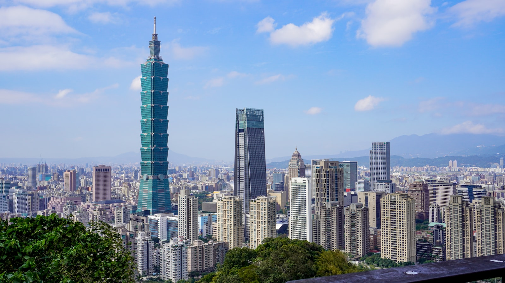

Taipei : Taiwan's vibrant capital of night markets, hot springs, temples and the soaring Taipei 101 : is one of Asia's easiest and safest cities to visit. There is no separate "Taipei visa": the city follows Taiwan's national entry rules. In 2026 most tourists, including citizens of the United States, the EU, the United Kingdom, Canada, Australia, Japan, South Korea and Brazil, enter visa-free for up to 90 days, while other nationalities use a low-cost eVisa, a free Travel Authorization Certificate, or a visitor visa. This guide explains entry by nationality, the airport, the best time to visit, what to see and how to get around.
| Key Facts 2026 | |
|---|---|
| Taipei is in | Taiwan (Republic of China) : its capital |
| Visa-free 90 days | US, UK, EU/Schengen, Canada, Australia, NZ, Japan, South Korea, Singapore, Brazil & ~65 total |
| Taiwan eVisa | ~USD 31, single entry 30 days (e.g. Colombia, Ecuador, Peru, Kazakhstan, Türkiye) at boca.gov.tw |
| Travel Authorization | Free online : India, Vietnam, Indonesia, Myanmar, Cambodia, Laos (with a qualifying visa) |
| Entry airport | Taiwan Taoyuan International (TPE) : 40 km from Taipei, ~35 min by Airport MRT |
| Passport validity | 6 months beyond your stay recommended; onward ticket required |
| Currency | New Taiwan dollar (NT$ / TWD) : cards widely accepted, EasyCard for transit |
| Official portal | boca.gov.tw |
Why Taipei Visa Rules Are Taiwan's Rules
Taipei is the capital of Taiwan, so visiting Taipei means entering Taiwan : the requirements are identical and there is no city-specific permit. Almost all visitors arrive at Taiwan Taoyuan International Airport (TPE), about 40 km west of the city. Your right to enter is decided on arrival there: visa-free for most nationalities, or with an eVisa, Travel Authorization Certificate or visitor visa for others. The same entry also covers the rest of Taiwan, including the outlying islands of Kinmen, Matsu and Penghu.
Visa-Free Entry to Taiwan (Most Tourists)
Around 65 jurisdictions enter Taiwan visa-free for up to 90 days. This includes citizens of:
- The United States, Canada, the United Kingdom and all 27 EU/Schengen states
- Australia, New Zealand, Japan, South Korea, Singapore and Malaysia
- Brazil and a number of other partner countries
No eVisa or advance application is needed : just arrive with a valid passport and an onward ticket. Canadian and British citizens can apply to extend a visa-free stay from 90 to 180 days. Separately, Thailand, the Philippines and Brunei have a 14-day visa-exempt scheme. Because the lists are reviewed periodically, confirm your own nationality on the official portal before booking.
Taiwan eVisa & Travel Authorization Certificate
If you are not visa-exempt, Taiwan offers two convenient online options before you fall back on a consular visa:
- Taiwan eVisa: around USD 31, single entry, up to 30 days, usually issued within about five business days at boca.gov.tw. Eligible nationalities include Colombia, Ecuador, Peru, Kazakhstan, Türkiye, the UAE and Saudi Arabia, plus designated group tours from India, Vietnam, Indonesia, the Philippines, Thailand and Cambodia.
- Travel Authorization Certificate (free): for citizens of India, Vietnam, Indonesia, Myanmar, Cambodia and Laos who hold a valid visa or permanent-residence card from the US, Canada, Japan, the UK, a Schengen country, Australia or New Zealand. It grants visa-free entry and is applied for online.
Travelers who fit neither scheme apply for a visitor visa at a Taipei Economic and Cultural Office (Taiwan's representative office) before departure.
Arriving at Taoyuan Airport & Getting to Taipei
Taiwan Taoyuan International (TPE) is the main gateway, about 40 km from central Taipei. The fastest link is the Taoyuan Airport MRT, reaching Taipei Main Station in roughly 35-40 minutes; airport buses and taxis also run around the clock. The smaller Songshan Airport (TSA), inside the city, handles domestic flights and a few regional routes (such as Tokyo Haneda and Seoul Gimpo). Your entry stamp or eVisa is checked at TPE on arrival.
Best Time to Visit Taipei
- October-November (autumn): the sweet spot : warm, drier and comfortable.
- March-April (spring): mild and pleasant, with occasional showers.
- June-September (summer): hot and humid, and within the typhoon season : check forecasts.
- December-February (winter): mild but often grey and rainy; a good time for Beitou's hot springs.
Top Things to See in Taipei
Once you are in, no extra permits are needed to explore. Highlights include the Taipei 101 observation deck, the National Palace Museum, the temples of Longshan and Dalongdong Baoan, and the city's legendary night markets (Shilin, Raohe, Ningxia). Easy escapes include the Beitou hot springs, Yangmingshan National Park and the mountain village of Jiufen : all reachable as day trips on public transport.
Getting Around Taipei
Taipei has one of Asia's best public-transport systems. Buy an EasyCard on arrival and use it on the clean, punctual MRT metro, city buses, some trains and at convenience stores. YouBike share bikes cover the city, taxis are plentiful and metered, and the high-speed rail (THSR) links Taipei to Taichung, Tainan and Kaohsiung in a couple of hours.
Documents for Entry into Taiwan
- Passport valid 6+ months beyond your stay
- Return or onward flight ticket (checked at boarding and on arrival)
- Proof of accommodation in Taipei (hotel booking or host address)
- Evidence of sufficient funds for your stay
- Arrival card (filled in on the plane or online)
- eVisa or Travel Authorization printout : only if your nationality requires one
Money, Currency & Costs
Taiwan's currency is the New Taiwan dollar (NT$ / TWD). Cards are widely accepted in hotels, shops and restaurants, and ATMs are everywhere, but carry some cash for night markets, small eateries and temples. An EasyCard, topped up with cash or card, is the simplest way to pay for transport and convenience-store snacks. Taipei is mid-priced for Asia : good street food is inexpensive, while hotels and Taipei 101 add up.
Health, Safety & Practical Tips
Taipei is one of the safest major cities in the world, with very low crime and excellent healthcare. Tap water is generally treated but many visitors prefer bottled or boiled water. The main natural hazard is the typhoon season (roughly June-October), when a storm can briefly close attractions and transport : keep an eye on forecasts. English is less widespread than signage suggests, but the MRT, major sights and a translation app make getting around easy.
Frequently Asked Questions
Do I need a visa to visit Taipei in 2026?
Taipei is the capital of Taiwan, so Taipei's rules are Taiwan's rules : there is no separate Taipei visa. Most tourists (US, UK, EU/Schengen, Canada, Australia, New Zealand, Japan, South Korea and Brazil) enter visa-free for up to 90 days. Other nationalities use the Taiwan eVisa, a Travel Authorization Certificate, or a visitor visa.
Which nationalities are visa-free for Taiwan?
Around 65 jurisdictions are visa-exempt for up to 90 days, including the US, Canada, the UK, all EU/Schengen states, Australia, New Zealand, Japan, South Korea, Singapore, Malaysia and Brazil. Thailand, the Philippines and Brunei have a 14-day visa-exempt scheme. Canadian and British citizens may extend a visa-free stay from 90 to 180 days.
How do I get a Taiwan eVisa and how much is it?
Apply online at the official portal boca.gov.tw. The eVisa costs about USD 31, allows a single-entry stay of up to 30 days and is usually processed within about five business days. Eligible nationalities include Colombia, Ecuador, Peru, Kazakhstan, Türkiye, the UAE and Saudi Arabia, plus designated group tours from India, Vietnam, Indonesia, the Philippines, Thailand and Cambodia.
What is the Travel Authorization Certificate?
It is a free online authorization that lets citizens of India, Vietnam, Indonesia, Myanmar, Cambodia and Laos enter Taiwan visa-free if they hold a valid visa or permanent-residence card from the US, Canada, Japan, the UK, a Schengen country, Australia or New Zealand (or had a recent visa-free entry). Apply on the Bureau of Consular Affairs website before travelling.
Which airport serves Taipei and how do I reach the city?
Most international flights land at Taiwan Taoyuan International (TPE), about 40 km west of Taipei. The Taoyuan Airport MRT reaches Taipei Main Station in roughly 35-40 minutes. Songshan Airport (TSA) inside the city handles domestic and a few regional flights.
What is the best time to visit Taipei?
Autumn (October-November) and spring (March-April) offer the most comfortable weather. Summers are hot, humid and fall within the June-October typhoon season, while winters are mild but often grey and rainy.
What documents do I need on arrival in Taipei?
Bring a passport valid for at least six months, a return or onward ticket, proof of accommodation in Taipei, evidence of sufficient funds and a completed arrival card. eVisa or Travel Authorization holders should carry a printed copy of their approval.
Is Taipei safe and what currency is used?
Taipei is one of the safest major cities in Asia, with very low crime. The currency is the New Taiwan dollar (NT$ / TWD). Cards are widely accepted, but carry some cash for night markets and small vendors, and buy an EasyCard for the MRT, buses and convenience stores.